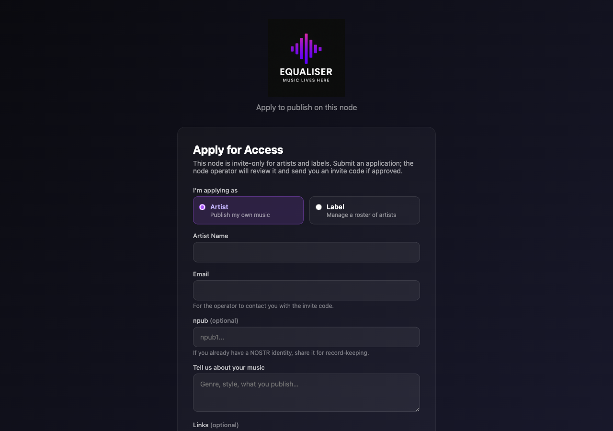
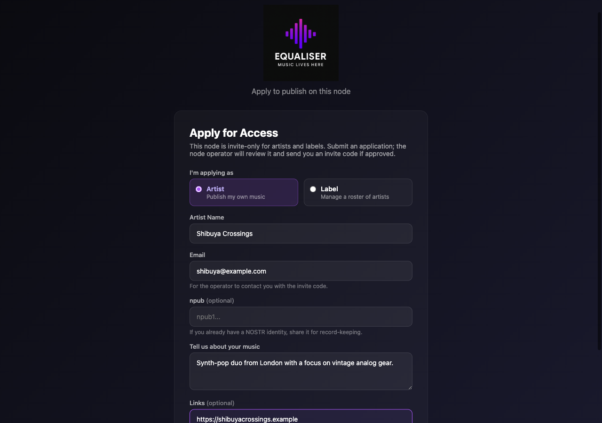
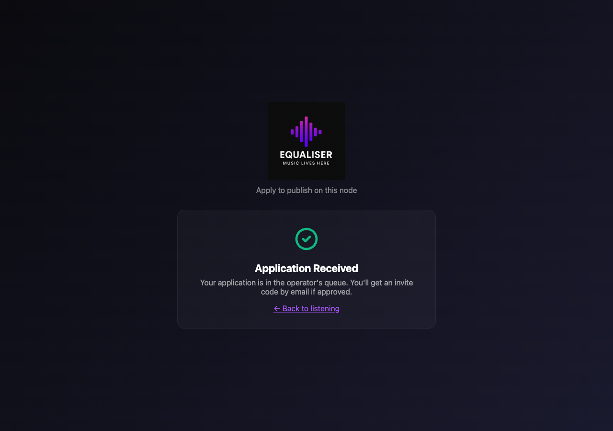
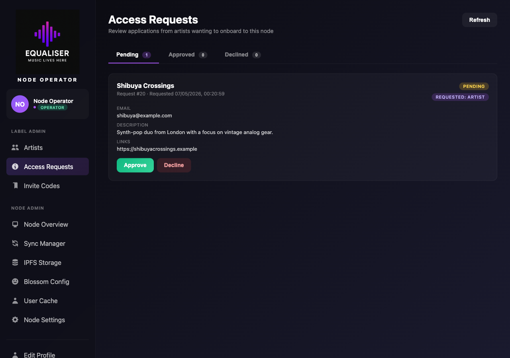
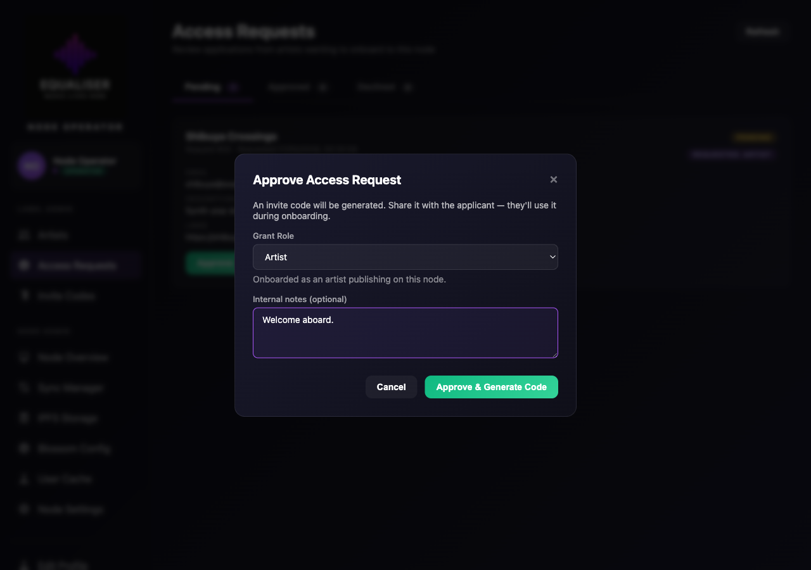
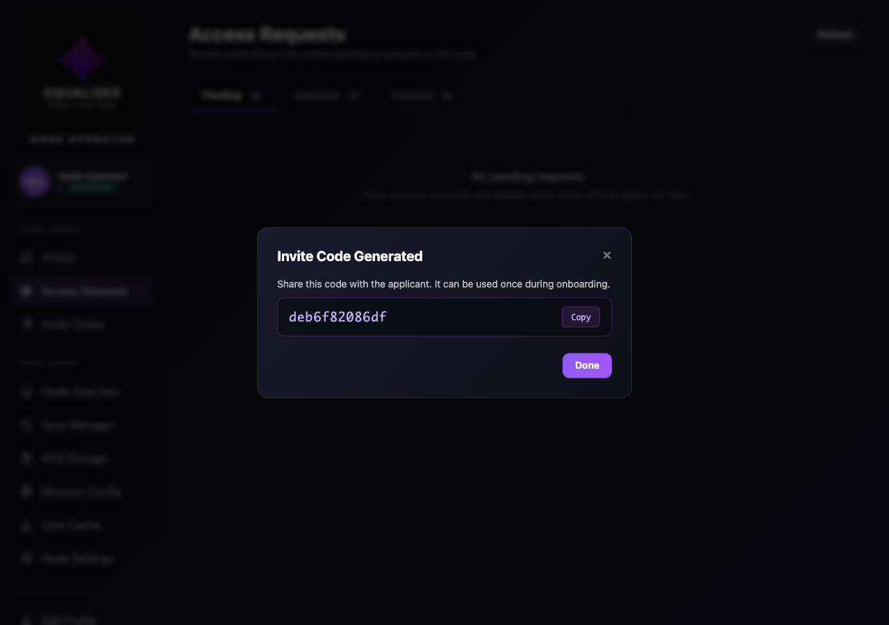
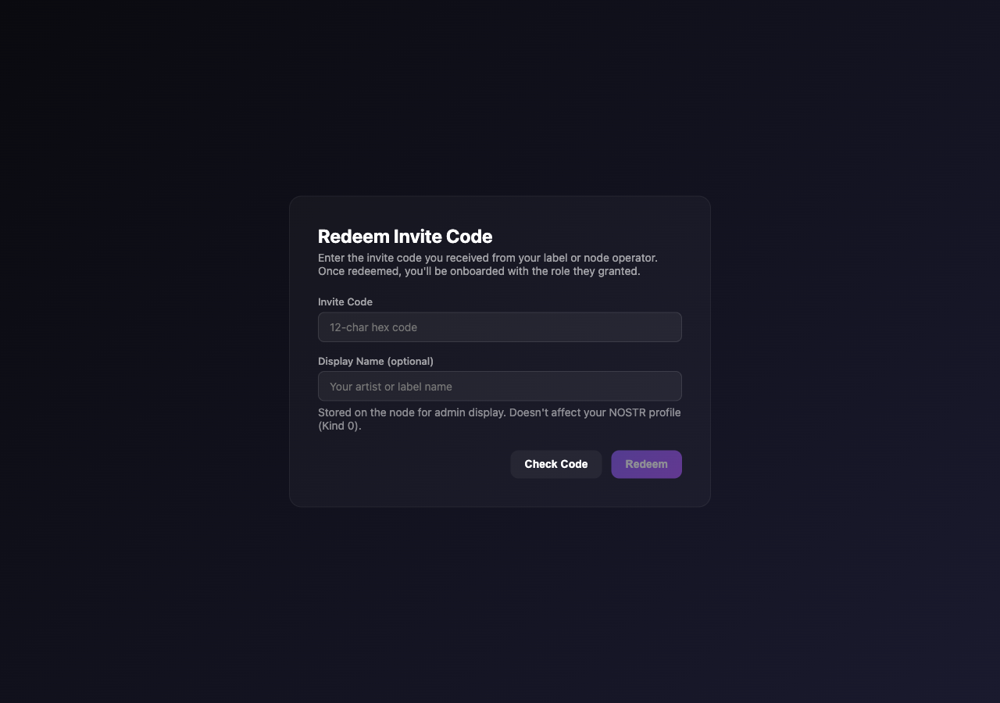
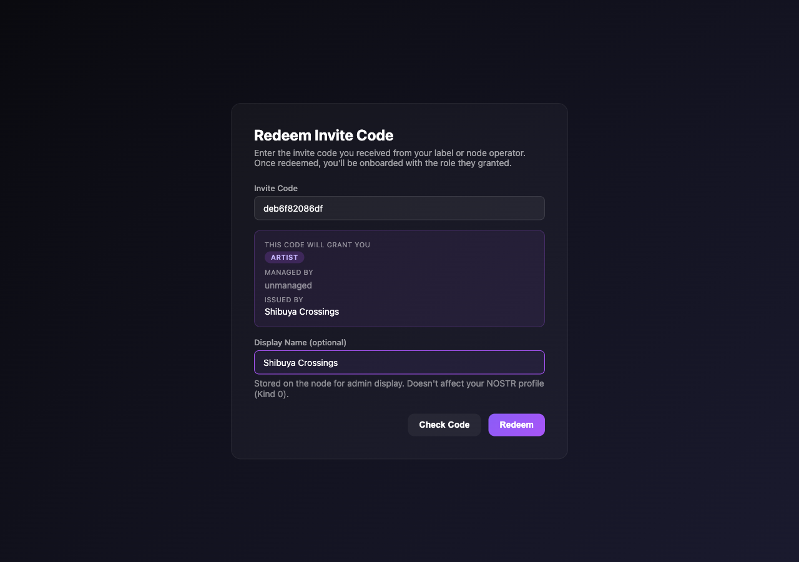
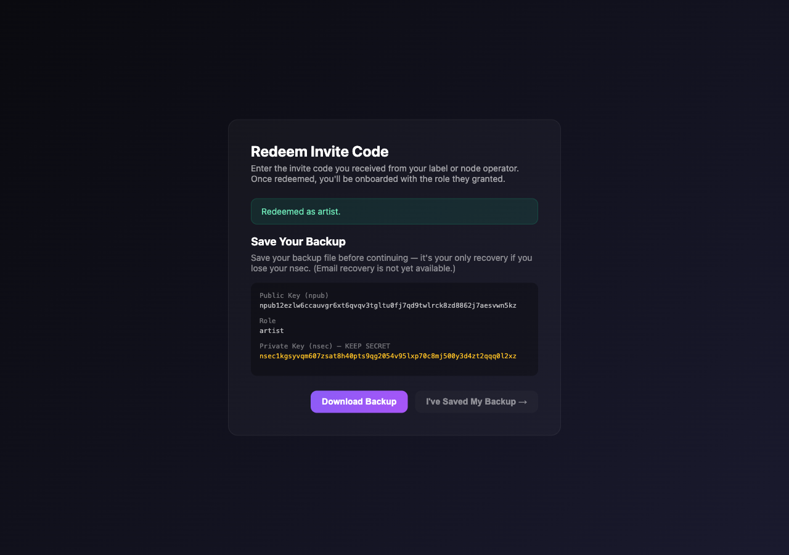

Artist Onboarding
An anonymous artist applies via the public /join form. A node operator reviews and approves, generating an invite code. The artist redeems the code, which creates their node_artists row and grants them an admin session — all while keeping ownership of their own nsec.
1 Visit the public /join form
Anyone can reach /join — no login required. They pick whether they're applying as an artist or a label.

2 Fill in details
Name, email, optional npub (if they already have one), short description, and optional links. The form copy adapts to the selected role.

POST /api/access/request. Server validates the role (operator can't be self-applied), inserts a access_requests row with status='pending', returns the new ID.
3 Application received
The applicant sees a confirmation. The operator will review and email an invite code if approved. (Email delivery is currently manual — the operator copies the code from the admin UI; SMTP integration is deferred.)

4 Pending request appears in the operator's queue
At /admin/access-requests.html, the operator sees the pending request with all the applicant's details, including the requested role.

5 Approve modal
Clicking Approve opens a modal where the operator can adjust the granted role (defaults to what was requested) and add internal notes. Only operators can grant label or operator roles; labels can only grant artist.

6 Invite code generated
The relay's ApproveAccessRequest stamps the request with status='approved', generates a 12-char hex invite code, and records issued_by = operator pubkey. The code is shown in a follow-up modal — the operator copies it and shares with the applicant out-of-band.

/admin/invite-codes.html tied to "Shibuya Crossings" until used. Once used, it's hidden from that view but the access_request row keeps it on record (invite_used = TRUE).
7 Visit /admin/redeem.html
The artist generates a fresh nsec (or imports an existing one) at /admin/login.html. With strict-mode enabled, an unknown pubkey is auto-redirected to the redeem page where they paste their invite code.

8 Code preview
Before committing, the artist sees what the code grants — role, manager (if any), and the issuer. GET /api/access/check-invite returns this metadata without consuming the code.

9 Save your backup
After redemption, the user is required to download a backup file before continuing — this is the only built-in recovery path if they lose their nsec. The backup contains the nsec, npub, and a small profile blob; restoring uses the existing backup-file login at /admin/login.html. The "Continue" button then routes to the universal profile setup step (next).

10 Profile setup — find or create a Kind 0
Every artist and label routes through /admin/profile-setup.html right after backup — no exceptions. The page first queries Damus, Primal, nos.lol and relay.nostr.band (plus the local node relay) for an existing Kind 0 on the artist's pubkey:

If a Kind 0 is found on any of those relays — the form pre-fills name, bio, location, avatar/banner URLs etc., with a banner telling the artist where it came from. They can edit anything before publishing:

If no Kind 0 exists — the form starts blank and the banner reads "Let's create your profile":

Next step: relay selection. The local node relay is always selected (and locked). The artist's discovered Kind 10002 relays are checked by default; Damus / Primal / nos.lol / relay.nostr.band are listed as unchecked suggestions. Custom relays can be added:

11 Dashboard
The artist clicks Go to Dashboard and lands on /admin/dashboard.html. The sidebar shows their role badge (artist) and (if the search step found one) their existing avatar + name. They can now upload tracks, edit their profile, and use the Listener View link to switch to the client SPA at /.